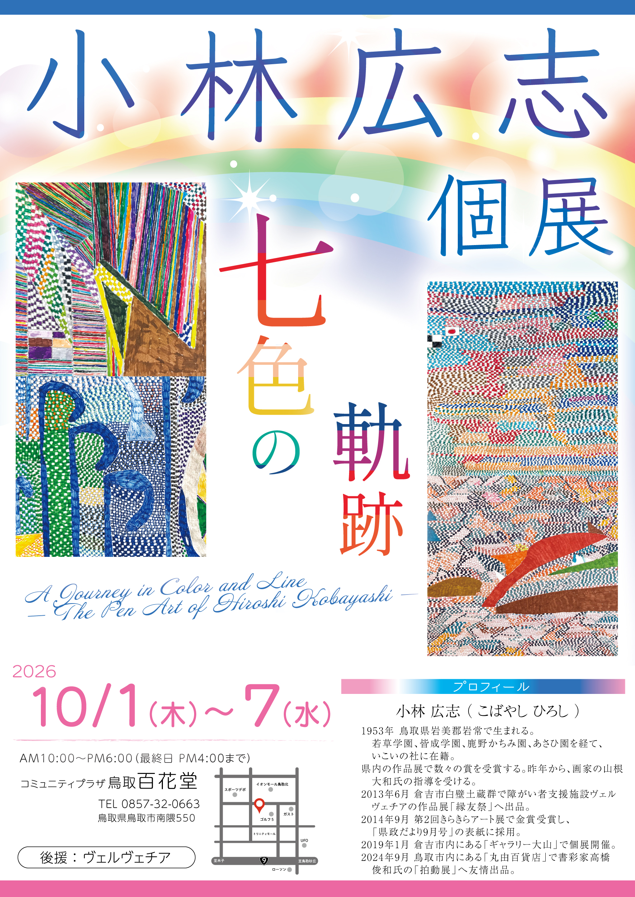

A Journey in Color and Line — The Pen Art of Hiroshi Kobayashi —
About
小林広志さんは長年、毎日のようにカラーペンを手に取り、紙の上に線を重ね、色を重ねながら、独自の作品世界を育んできました。
近くで見ると、一本一本の線の密度に引き込まれます。少し離れると、色彩の大きな流れに包まれます。どちらにも、描き続けてきた時間の豊かさが宿っています。
美術の知識は必要ありません。無数の色と線が織りなす世界を、どうぞゆっくりとお楽しみください。
Information
Profile
Online
Access
コミュニティプラザ百花堂（鳥取）1階
〒680-0903 鳥取県鳥取市南隈550
メガネルネックス鳥取本店内
TEL：0857-32-0663
※ 駐車場あり（無料）
※ 入場無料・どなたでもご覧いただけます